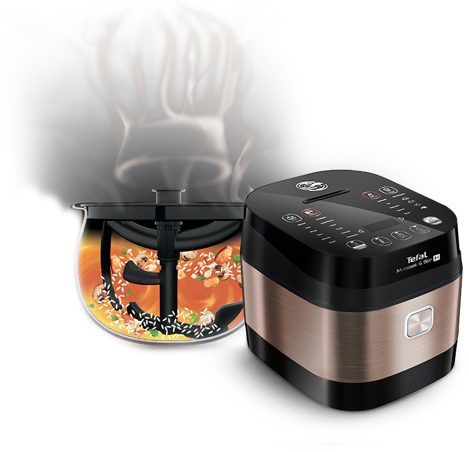
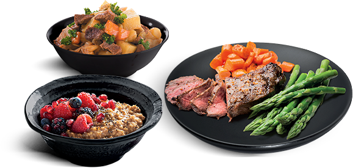

умная технология перемешивания и 3D индукционный нагрев


ЛУЧШИЕ ТРАДИЦИИ
В НОВОМ ПОКОЛЕНИИ
Вкус, которым вам хочется поделиться
3D Индукционная технология
Точный контроль температуры и
равномерное распределение
Нагрева чаши благодаря сферической
форме гарантируют правильное
приготовление блюд раскрывая их
лучшие Вкусовые качества
ЗАБУДЬТЕ О ХЛОПОТАХ С ПЕРЕМЕШИВАНИЕМ
Умная лопатка перемешает все за вас
- Лопатка работает только при закрытой крышке прибора.
- Вращение происходит благодаря встроенному в крышку мотору.
- Лопатку и чашу можно мыть в посудомоечной машине.
- Все детали безопасны для использования при высоких температур
программы
Программы с автоматическим перемешиванием
Предусмотрено в программах,
где приготовление происходит
преимущественно перемешиванием:
каша, тушение, ризотто, варенье.
Программы без перемешивания/
ручной режим
ручной режим
По умолчанию функция перемешивания
отсутствует, но может быть принудительно
включена пользователем. Вращение лопатки
можно принудительно выключить/включить
заново во время работы программ.
Без лопатки
Если лопатку (все элементы
конструкции) не устанавливать,
прибор будет работать без изменений
в соответствии с указанными
программами. Но не ждите обычного
вкуса: благодаря циркуляции воздуха
сферическая чаша создает эффект
традиционной печи, делая ингредиенты
сочными, а блюда — насыщенными.
ПРОСТО И ВКУСНО ЕЖЕДНЕВНО
36 режимов, вкл. суп, пар,
Выпечку, Cу-вид и др.
Возможность
Настройки t° И времени
Выпечку, Cу-вид и др.
Возможность
Настройки t° И времени
Отложенный старт:
все готово тогда,
когда вам нужно.
все готово тогда,
когда вам нужно.
сенсорный экран
Функция самоочистки:
дополнительная
насадка на лопатку.
дополнительная
насадка на лопатку.
79 вкуснейших
рецептов
рецептов
Самостоятельно перемешивает и... даже моет!
Все просто:
- 1)Установите специальную насадку
- 2)Залейте воду
- 3)Включите режим самоочистки Вращающаяся лопатка не оставит никаких шансов прилипшим кусочкам пищи
Шестислойная чаша мультиварки сделана из специального сплава (аллюминий, два слоя антипригарного покрытия), компоненты которого Имеют повышенную теплопроводность, дольше противостоят коррозии И механическим повреждениям. Покрытие с прекрасными показателями Изностоцкости прошло специальные тесты на абразивную обработку, Оно нимально подвержено сколам; чашу можно мыть в посудомоечной машине.
Большое количество вкусных рецептов
От закусок до десертов, Multicook&Stir IH
предлагает бесконечные возможности приготовления
вкусных блюд, которых легко достичь в кратчайшие сроки.
предлагает бесконечные возможности приготовления
вкусных блюд, которых легко достичь в кратчайшие сроки.